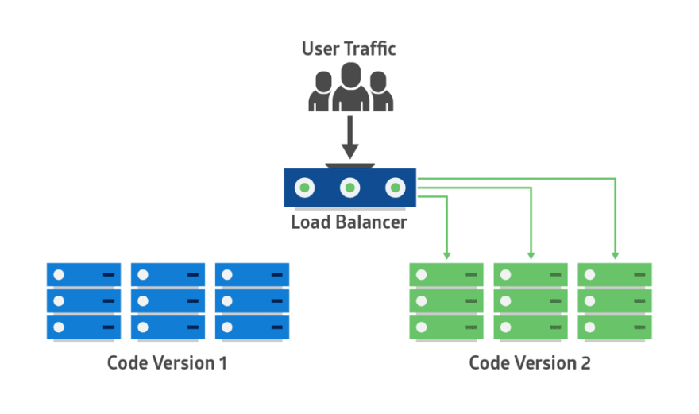

コンテナ化の技術
Dockerとは？
Linuxのコンテナ技術を使ったもので、仮想マシンとよく比較されるもの
仮想化の技術

コンテナと仮想マシンの違い
コンテナ化の利点
- 一貫性：コード化されたファイルを共有することで、どこでも誰でも同じ環境が作れる(IaC)
- 高速：起動に数分かかる仮想マシンに対し、 数秒以内に起動
- 軽量：リソースを節約し、効率的に運用
Dockerの実行
docker run --rm --name my-nginx -d -p 8080:80 nginx
ブラウザで動作確認
http://localhost:8080各種コマンド
docker ps
docker exec -it {CONTAINER ID} bash
docker image ls
docker stop {CONTAINER ID}
docker rm {CONTAINER ID}
volumeのマウント
docker run -v $PWD:/usr/share/nginx/html -d -p 8080:80 nginx
イメージの作成
Dockerfileを作成して独自のイメージを作成
FROM node:lts-alpine
RUN npm install -g http-server
WORKDIR /app
COPY package*.json ./
RUN npm install
COPY . .
RUN npm run build
EXPOSE 8080
CMD [ "http-server", "dist" ]
イメージのビルド
docker build -t vueapp .
イメージの確認
docker image ls
コンテナの作成と起動
docker run -it -p 8080:8080 --rm --name vueapp-run vueapp
Docker compose
複数のコンテナを組み合わせた環境をYAMLで記述できる
version: "3"
services:
web:
build: ./vue-web
depends_on:
- json-server
container_name: "docker-vue"
ports:
- "8080:80"
json-server:
build: ./json-server
container_name: json-api
ports:
- "3000:3000"
volumes:
- ./json-server/db.json:/data/db.json
command: json-server --watch db.json --host 0.0.0.0
Docker-composeの起動
docker-compose up
各種コマンド
docker-compose up -d
docker-compose down
docker-compose build
docker-compose logs -f
Kubernetes
本番環境レベルのコンテナオーケストレーション
Kubernetesの特徴
- 自動化されたロールアウトとロールバック
- サービス正常性のモニタリング
- サービスの自動スケーリング
- 宣言型管理
自動スケーリング

宣言型の具体例
apiVersion: autoscaling/v2beta1
kind: HorizontalPodAutoscaler
metadata:
name: php-hpa
namespace: default
spec:
scaleTargetRef: # ここでautoscale対象となる`scaled resource object`を指定
apiVersion: apps/v1
kind: Deployment
name: php-deploy
minReplicas: 1 # 最小レプリカ数
maxReplicas: 5 # 最大レプリカ数
metrics:
- type: Resource
resource:
name: cpu
targetAverageUtilization: 50 # CPU使用率が常に50%になるように指定
Deploymentの手法
- Blue-Green deployment
- Canary Deployment
- A/B testing
Blue-Green deployment
切替前

Blue-Green deployment
切替後
blue greenの利点
- サービス停止不要
- 事前にリリース可能
- ロールバックが容易
blue greenの難点
- リソースが2倍必要（コンテナの使用で軽減）
- DBの扱いが難しい
カナリアリリース
カナリアリリース実装

カナリアの特徴
- リスクの高い・実験的な要素に使用
- 一部のユーザーで様子見
- 良ければ徐々にロールアウト
- 問題があればロールバック
A/B testing
A/Bテストの実装
A/Bテストの特徴
- 主にフロントエンドで活用
- 実ユーザーで実験しどんどんUIを改善
デプロイ周り
ブルーグリーン、カナリヤ、ABテスト等、
様々なデプロイ手法が共通の手段で実装可能
| デプロイ手法 | アプリ１ | アプリ２ |
|---|---|---|
| 青緑 | 100% → 0% | 0% → 100% |
| カナリヤ | 95% → 0% | 5% → 100% |
| ABテスト | 50% | 50% |